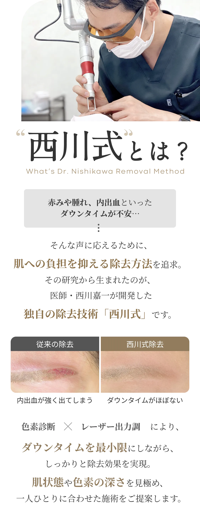
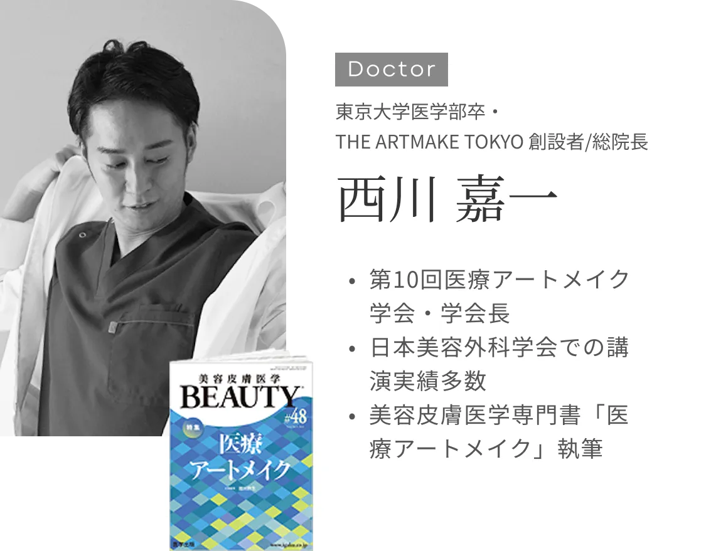
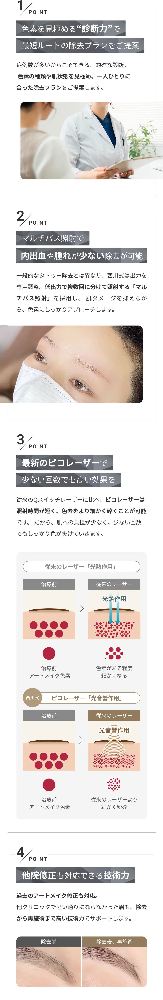
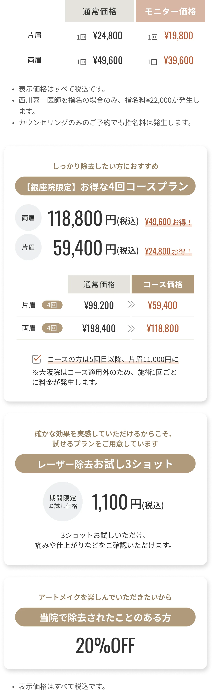

CASE
眉アートメイク除去症例

一部（眉頭の1本）だけ調整したい
除去回数：1回
古いアートメイクを完全に消したい
除去回数：4回
濃く入れたアートメイクを自然にトーンダウンしたい
除去回数：1回
他院で照射した部分の黒ずみをなんとかしたい
除去回数：3回
眉山の形を整えたい
除去回数：2回
眉頭まわりの黄ばみをクリアにしたい
除去回数：2回
眉尻だけふんわり薄くしたい
除去回数：1回
全体の色が濃すぎるので、自然にしたい
除去回数：2回




POINTS

PRICE
料金表

STEP
施術当日の流れ
01

カウンセリング
今までのアートメイク歴や、施術に関するご希望などをカウンセリングさせていただきます。
その他ご不安、疑問など、些細なことでもお気持ちをぜひお聞かせください。02

アートメイク除去に
ついての説明アートメイク除去ってどんな施術なの？
回数や費用、ダウンタイム等について詳しい内容をご紹介いたします。03

医師による診察
医師による診察で安全にアートメイク除去を行っていただけるかを確認していきます
04

同意書の取得・会計
診察で問題がなければ問診票をご記入いただき、お会計をさせていただきます。
05

塗る麻酔
ご希望があれば、施術部位に塗る麻酔を塗布しお痛みをカバーします。
（お痛みはそこまで強くないので、麻酔無しで施術をする方も多いです。）06

施術
ピコレーザーを使用し、施術を行います。
07

アフターケア
施術後の経過や過ごし方についてご案内いたします。
次回のご予約もお決まりでしたらお取りいただけます。


ACCESS
アクセス
銀座院
- THE ARTMAKE TOKYO 銀座院
住所
東京都中央区銀座１丁目２−４
サクセス銀座ファースト7階アクセス
銀座一丁目駅 ７番出口（徒歩1分）
京橋駅 3番出口（徒歩1分）
JR有楽町駅 京橋口（徒歩6分）電話番号
050-1807-2572- 営業時間：10:00～19:00（予約制）
大阪院
- THE ARTMAKE TOKYO 大阪院
住所
大阪府大阪市北区曾根崎新地１-4-12
桜橋プラザビル B1Fアクセス
JR大阪駅 桜橋出口 徒歩5分
JR東西線北新地駅 西出口 徒歩1分
(11-5番出口すぐ)
地下鉄四つ橋線西梅田駅 徒歩2分
(8番出口方面C-60左手階段すぐ)電話番号
050-1807-2572- 営業時間：10:00〜19:00
Q&A
よくある質問
- Q1.
何回くらい除去レーザーをしますか？
A1.色素の種類・量・深さと目的によって必要な回数がことなります。
【黒のみ・少ない・浅い場合】
1回でかなり薄くなります。
【入れ直し目的の場合】
黒＋赤＋黄色・量が普通・深さが普通のかたは、3-4回程度入れ直しに移行される方が一般的です。
色素量が多くなる、色素の定着位置が深くなればなるほど、回数が増えていく傾向にあります。 - Q2.
痛みはありますか？
A2.【眉】
輪ゴムで弾かれるような痛みがございます。
ご希望の方は、クリーム麻酔などをしてから施術を行うこともできます。 - Q3.
翌日から仕事に行けますか？
A3.翌日から通常通りの生活が可能です。
- Q4.
メイクは、いつからできますか？
A4.多くの方が翌日からメイクができます。
- Q5.
テスト照射は受けられますか？
A5.テスト照射プランがございます。
- Q6.
除去後に再度アートメイクできますか？
A6.アートメイク可能です。入れ直しを目的に除去施術を受けられる方は多いです。
- Q7.
黒く変色することがありますか？
A7.発生することがございます。br西川式では黒い変色の発生確率を下げるため、マルチパス方式を採用しています。
- Q8.
どんな副反応が起こる可能性がありますか？
A8.施術直後は赤みが発生することが多いですが、数時間で回復することがほとんどです。
1%以下の確率ですが、水疱が発生する場合がございます。 - Q9.
内出血はありますか？
A9.西川式の場合、内出血がでることが少ないです。
一部、皮膚の深い位置にある色素の除去や黄い色素の除去の際に内出血を伴う施術をご案内する場合がございます。 - Q10.
どんな人は施術を受けられませんか？
A10.ご妊娠中の方などは施術を控えさせていただくことがあります。
- Q11.
施術後のケア方法は？
A11.当日は、施術部位を触れないようにしていただきます。
翌日以降は普段通りの生活が可能で、特別なケアは不要です。